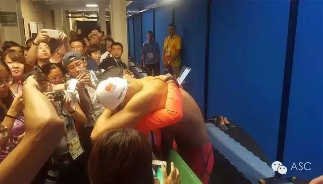

互惠动态
|
|
不要让孩子再经历“第一名”的绑架！
这两天的朋友圈，一片欢呼雀跃，因为中国的首金出！现！了！在我们一次次地期待着中国健儿拿下金牌，而这些金牌却一次次地与我们擦肩而过。
当我们的中国健儿张梦雪，这一位91年出生的年轻女孩以总环数199.4夺冠，当她站在了女子10米气步枪的领奖台上，耳边响起了中国国歌，这枚中国代表团第一枚的金牌承载着多少艰辛和荣耀，寄托了多少人的期望。
中国健儿承受着多大的压力，在获得它的时候，流下了激动的泪水，因为它似乎代表着这四年来的努力，并没有白费。
而另一边的“中国队首日无金”，这样的标题在今天刷遍了各大门户网站。各种“出师不利”“痛失金牌”的报道之下，还出现了一些骂声。
从运动员说开去，我们的孩子，是不是也常常经历这样的“第一名”绑架？我们真的应该如此灌输“比赛第一”的理念吗？

01
庞伟没有拿到金牌，孙杨也没有。
于是举国又陷入了一片沉痛，所谓“出师不利”。不得不说，这些年民智开启的结果不错，微博下边多了不少理性的声音，但是“废物”“垃圾”之声仍不绝于耳。
面对这些人，这一次，我是真的想说句“你行你上啊”。我知道这块银牌对于一个顶着骨折伤痛用单腿咬牙坚持训练的运动员的意义。
奥运会上，但是每次看到中国队惜败的时候都是一种精神折磨，旁边拿铜牌的老外喜不自胜，可是再看看拿了银牌的中国运动员，一定正在痛哭流涕，把头埋得低低，回国后，贵宾接待高额奖励都泡汤了，没准还得受罚。
仍记得当年汉城奥运会李宁意外从吊环上摔下来，回国时只能走一条偏僻通道的黯然落寞。
当竞技运动和体制牢牢绑在一起，运动的唯一意义就变成了获得金牌，获得金牌，获得金牌。
比起伤痛，更难让一个中国运动员承受的，是精神上的压力。
02
媒体对于孙杨的赛前状态是这样描述的:
即将到来的里约奥运会，孙杨的400米自由泳比赛是游泳比赛中率先出金牌的项目，也是中国游泳队最为看重的一块金牌，孙杨身上的压力可想而知，这份无处安放的安全感伴随着他的这次澳洲之行。
只是那一刻，他不知道未来的半年他将经历怎样的大起大落，也未曾想到，他的这块400米金牌将是中国奥运代表团里约奥运首金。
“我不能让父母失望，我就是死，也要死在水里”，这是孙杨曾亲口说过的，足见他承受压力之大。昨天记者采访，他面对全国观众痛哭流涕时，内心又该是何等焦灼。
这让我想起了刘翔。刘翔最初失利时，人们同样刷着 “没关系”、“下次努力”的语言，看似大度，实则鸡贼。当他在伦敦奥运会跌倒在比赛场地时，辱骂的声音便陡然上升。
孙杨正在经历的，正是刘翔式境遇。人们可以容忍一次，但第二次再无缘冠军，许多人顷刻间就会由粉转黑。对于孙杨而言，即将到来的200米自由泳、1500米自由泳比赛，注定凶险万分。
永争第一，不仅是中国特色，同样也是亚洲文化的特色。“成王败寇”四个字从出生开始，便像条看不见的鞭子，阴魂不散，跟在每个人身后。
我就不明白银牌怎么了？很丢人吗？拿到亚军的孙杨泣不成声，连自己都不能认可自己。究竟什么时候，我们才能从“冠军”的枷锁里走出来，有一颗平和的面对比赛的心态。
03
从孙杨身上，我们都能看到自己的影子，那个不甘心、不服输，却又被赤裸裸的事实狠狠打击的年轻人。
我们知道要调整心态，我们也知道一次失利代表不了什么，我们什么都清楚，但内心的焦虑与自责却仍然像病毒一般蔓延，渗透进身体的各个角落。
这时，我们需要的不是换汤不换药的说辞，而一个可以依靠的肩膀，和能够重拾信心的肯定。
对于孙杨来说，比赛结束的第一时间，他就找到了可以依靠的肩膀。
从小，我们就被大人们灌输凡事都要争第一的执念，别说差一分，差半分都是第二，而第二，就是一种耻辱。
如今，我们这群被冠军意识深深洗脑的孩子走向了社会的舞台，又变成了新一批用小皮鞭抽着孩子往前的爸爸妈妈们。
经常在各个群里看到妈妈们给自己的宝宝拉什么萌娃大赛书画大赛的选票，“不要看，记住直接选2号！”“2号是我的孩子，给她投上一票”“请帮我的孩子拿第一”……
很想问他们，参加的意义就只是为了一个虚无缥缈的第一？
回顾里约奥运会的开幕式，获得最多掌声的不是金牌最多的美国队，也不是最爱金牌的中国队，而是难民代表团。
没有人在乎他们能够获得几金几银，深处苦难，克服艰难，不远千里万里而来，只为享受体育带来的快乐，这才是真正的奥运精神，这才是我们深爱奥运的原因。
无论多少金牌银牌，最终的归宿不过都是橱柜里的一个角落。最终留在心里的，是我们流过的汗，淌过的泪，和永不放弃自己的精神。
别再让我们的下一代活在金牌绑架里，请告诉他，宝贝，不要去管别人考了多少分，拿了多少名，全力以赴的人，就是最棒的人。
04
除了呼吁家长和社会不要给孩子过多压力，还想告诉孩子：请珍惜成长过程而不是看重排名！
分享跳水运动员傅园慧的赛后采访视频，记者说恭喜你取得了58.95秒的成绩，姑娘大呼“我有这么快？！我很满意！已经用了洪荒之力了！鬼知道我经历了什么，我已经心满意足了。
记者接着问她，你对明天的决赛是否充满信心呢？傅园慧说：没有，我已经很满意了！你看，同样是比赛，不同的心态，不一样的心情！
对待“金牌”，保持开朗平常心，你一定会取得超乎想象的成绩！

关于互惠，您了解得够多么？
请外国学生来家庭照顾孩子，辅导孩子外语？
只了解这些是不够的！
获取更多信息请参考以下方式：
联系ASC：
电话：86-21-61116069(上海中心）
86-25-66065662（南京中心）
全国家庭均可申请！
手机：15601666586（可加微信）
Q Q：3259637585
微信：asc-center
邮箱：info@asc-center.com
网站：www.asc-aupair.com

感谢您对我们的关注